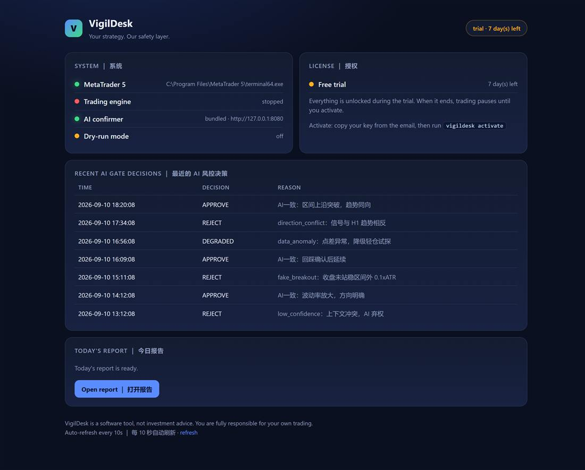

MT5 risk-control workstation
Your strategy. Our safety layer.
A local risk-control layer for MetaTrader 5 — process guard, per-trade loss caps, a daily drawdown kill-switch, and an AI that reviews your own strategy's orders before they go out.
本地风控层：进程守护 · 单笔亏损上限 · 日内回撤熔断 · AI 逐单复核。
Windows 10/11 · no Python, no account, no card · unzip and run
VigilDesk.exe, the 7-day trial starts by itself.
｜ 免安装、免注册、免绑卡。
Install notes ｜ 安装说明

Plans ｜ 套餐
Free forever: Watchdog Lite keeps your MT5 terminal alive — no card, no account. Paid plans add the full risk-control workstation. Every paid plan starts with a 7-day free trial; you are not charged today (a card is required at checkout). ｜ 免费版永久可用；付费套餐均含 7 天免费试用，今天不扣费（结账时需绑卡）。
Starter
$19 /month
7-day free trial · $0.00 today
One MT5 account, the full risk-control stack, watchdog and decision log. ｜ 单账户，完整风控栈 + 守护 + 决策留痕。
Start Starter — $19/mo
Click anywhere on this card to start ｜ 点卡片任意位置即可开通
Pro most popular
$39 /month
7-day free trial · $0.00 today
Everything in Starter plus alert channels (email / Telegram when the watchdog restarts something) and priority support. ｜ 含 Starter 全部功能，外加告警推送（邮件 / Telegram）与优先支持。
Start Pro — $39/mo
Click anywhere on this card to start ｜ 点卡片任意位置即可开通
Lifetime
$599 one-time
Pay once · no subscription
Every current feature plus all future updates on the same machine. ｜ 一次买断，含全部现有功能与后续更新。
Buy Lifetime — $599
Click anywhere on this card to buy ｜ 点卡片任意位置即可购买
Payments are processed by Paddle (merchant of record). Cancel any time before the trial ends and you are not charged. ｜ 支付由 Paddle 处理（记录商户），试用结束前可随时取消，不产生费用。 Checkout not opening? Open this page in your normal browser, or email 760808632@qq.com and we will send you a payment link. ｜ 结账窗口打不开？请用正常浏览器打开本页，或邮件联系我们索取付款链接。 Full details: pricing page.
See every feature ｜ 完整功能演示
80 seconds, no audio, nothing hidden — the whole workstation, feature by feature. ｜ 80 秒看完 12 项功能，全部是产品真实运行画面。
What VigilDesk does ｜ 核心功能
Process guard
Keeps your MT5 terminal and bot alive: crash auto-restart with a restart cooldown and exponential backoff — no restart storms, no dead terminals at 3 am. ｜ 进程守护：崩溃自动拉起，冷却与指数退避 防止重启风暴。
Per-trade loss cap
Set a hard cap on how much any single trade may lose before the order is held. ｜ 单笔亏损上限：超出限额的订单在发出前即被拦截。
Daily drawdown guard
A daily loss cap (1.5% of balance by default) that stops new entries for the rest of the day when it is hit — and survives a restart, so the cap cannot be bypassed. Consecutive losses automatically reduce size. ｜ 日内亏损上限（默认余额的 1.5%）击穿后当日停止开仓，且重启也无法绕过； 连续亏损自动降仓。
AI confirmer
An AI risk gate reviews each order your own strategy produces and records its reason — every pass or hold is logged for review. ｜ AI 风控闸门逐单复核并留痕，可在 dashboard 复盘。
Dry-run first
Smoke-test the whole chain in dry-run mode — orders are simulated until you switch to live guarding. ｜ 先 dry-run 空跑验证链路， 确认无误再切实盘守护。
Your data stays local
Logs, decision records and reports live under
%LOCALAPPDATA%\VigilDesk; inference runs against your own
endpoint; the free edition has no telemetry. ｜ 数据本地留存，推理走
自有端点，免费版完全无遥测。
Download & setup ｜ 下载与安装
Download
Windows 10/11. Point VigilDesk at
terminal64.exe, pick your AI model, set risk limits, and
smoke-test in dry-run mode. ｜ 安装包为免安装版，首次运行向导四步完成配置。
Mirror ｜ 备用下载：GitHub Releases
Button not responding? Paste this into your browser ｜ 按钮没反应？把下面
地址复制到浏览器：
https://xuks124.github.io/vigildesk/VigilDesk-0.1.6-win64-portable.zip
First launch may show Windows "Unknown publisher" (not code-signed yet):
click More info → Run anyway. ｜ 首次启动若提示"未知发布者"，
点"更多信息 → 仍要运行"。 SHA-256:
98430B06A1992290CCDB8A9BE40F0B9F4759FD8818D63806ED9CEB955E71E0C1
Free forever tier
Watchdog Lite needs no licence and no account: unzip and run
VigilDesk.exe lite to keep your MetaTrader terminal alive
24/7. It adopts an already-running terminal instead of starting a second
one. ｜ 免费版无需授权：VigilDesk.exe lite 守护 MT5 常驻，
已开着的终端会被接管而不是重复启动。
Get started
New here? Follow the tutorial: install → configure → run → read the logs. Then read how we handle security and compliance.
Read the tutorial · Security & complianceSupport & feedback
Self-serve FAQ covers installation, activation, MT5 paths, models, firewall and refunds. Found a bug or want a feature? Write to us — the feedback form works without a GitHub account. （中文：自助 FAQ 覆盖安装、激活、MT5 路径、模型、防火墙与退款；反馈表单无需 GitHub 账号。）
Browse the FAQ · Send feedback · 760808632@qq.com